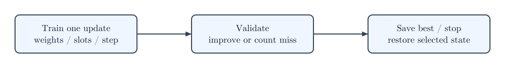
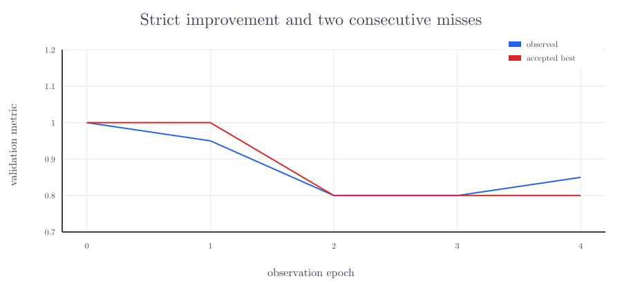
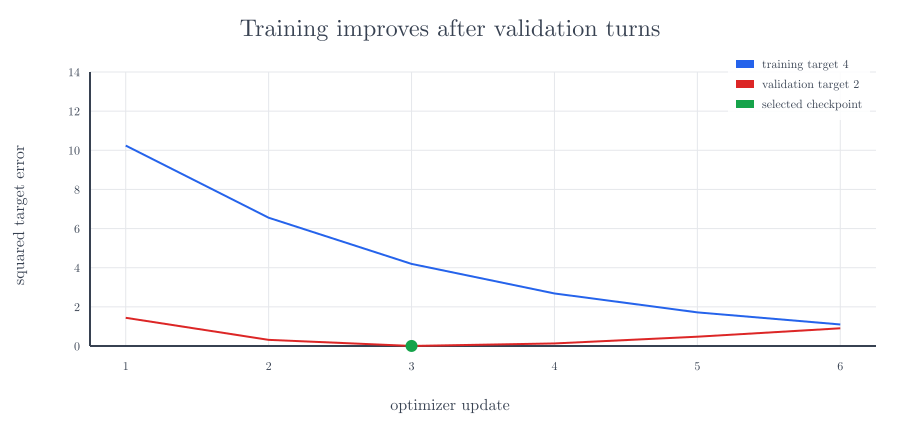
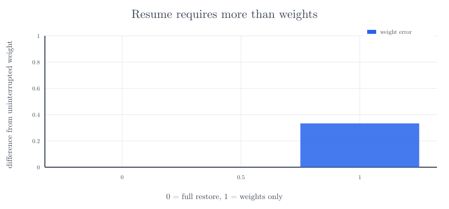

Early Stopping and Checkpoints: Selection Is Not Resume
Abstract
Training loss can keep improving while the quantity used to select a model gets worse. We need an explicit stopping rule and a way to restore the selected state. A separate problem is resuming the same optimization trajectory: weights alone omit momentum, adaptive moments and counters. Small deterministic examples expose patience boundaries, restore a best scalar model, and compare full-state versus weights-only Adam continuation. All archives and figures are saved locally; no population generalization claim is made.
The method
EarlyStopping observes a finite metric at strictly increasing nonnegative epoch indices. For minimization it accepts a new best only when
The first observation becomes best, a strict improvement resets the miss count, and other observations increment it. A non-improvement stops when misses reach patience; patience zero still waits for the first non-improving observation. Maximization reverses the inequality. Epoch gaps do not count extra misses: this is a count of observations, not elapsed epochs. The monitor records a decision but does not itself save a model.
Checkpoint-best selection and exact resume preserve different state. The checkpoint helpers can save ParameterStore weights, Optimizer slots/counter and optionally BatchOrder permutation/cursor/RNG. They do not serialize the whole program: recreate compatible parameter creation order, optimizer configuration, rate/schedule and batching settings. Application RNGs, other model state and the stopping monitor must be persisted separately when needed. Validation repeatedly used for stopping is selection data, not an untouched final test set. Restore into existing parameter handles before computing a new loss.
The examples have no dropout, random operations or sampled batches; exact agreement here is conditional on that deterministic setup and a compatible environment. No dataset is needed for a controlled stopping decision or a state-continuation check.
The concept diagram below is drawn by dm::graphics::Diagram. Its editable C++
source is the complete block below; regeneration uses the same datamunge toolchain
as the numerical examples. Exports consume the saved local SVG.
#include <dm/dm.hpp>
int main() {
std::filesystem::create_directories("build");
dm::graphics::Diagram diagram;
diagram.node("n0", {0.0, 0}, "Train one update\nweights / slots / step");
diagram.node("n1", {5.5, 0}, "Validate\nimprove or count miss");
diagram.node("n2", {11.0, 0}, "Save best / stop\nrestore selected state");
diagram.edge("n0", "n1").edge("n1", "n2");
diagram.save_svg("build/early_stopping_checkpoints_concept.svg");
}
Simple examples
A five-observation patience boundary
Minimize the metrics (1,.95,.8,.8,.85) with patience two and min_delta .1. The .95 value is too small an improvement; .8 is accepted; the final tie/worsening pair exhausts patience. Ties do not improve the best.
#include <dm/dm.hpp>
int main() {
dm::nn::EarlyStopping monitor(2, .1);
const std::vector<double> metric = {1, .95, .8, .8, .85};
std::vector<double> epoch, best, misses, improved, stop;
for (std::size_t i = 0; i < metric.size(); ++i) {
const auto d = monitor.observe(metric[i], i);
epoch.push_back(i);
best.push_back(monitor.best());
misses.push_back(monitor.misses());
improved.push_back(d.improved);
stop.push_back(d.stop);
}
dm::nn::EarlyStopping maximize(0, 0., true);
if (maximize.observe(.4, 0).stop || !maximize.observe(.5, 1).improved ||
!maximize.observe(.5, 2).stop || improved != std::vector<double>{1, 0, 1, 0, 0} ||
stop != std::vector<double>{0, 0, 0, 0, 1})
throw std::runtime_error("Early stopping disagrees with its patience and improvement rules");
bool rejected = false;
try { (void)maximize.observe(.6, 2); }
catch (const std::invalid_argument&) { rejected = true; }
if (!rejected || maximize.best() != .5)
throw std::runtime_error("Out-of-order validation epoch was accepted or changed the best score");
std::print("Minimize and maximize patience checks passed. Repeated epoch rejected.\n\n");
dm::dstruct::DataFrame t;
t.add_column("epoch", epoch);
t.add_column("metric", metric);
t.add_column("best", best);
t.add_column("misses", misses);
t.add_column("improved", improved);
t.add_column("stop", stop);
auto p = dm::graphics::RPlot::create();
p.lines(epoch, metric, "observed", {37, 99, 235})
.lines(epoch, best, "accepted best", {220, 38, 38})
.title("Strict improvement and two consecutive misses")
.x_label("observation epoch")
.y_label("validation metric")
.y_limits(.7, 1.2);
std::filesystem::create_directories("build");
p.size(900, 420).save_svg("build/early_decisions.svg");
std::print("{}\n", t.to_md(3));
}Minimize and maximize patience checks passed. Repeated epoch rejected.
| epoch | metric | best | misses | improved | stop |
|---|---|---|---|---|---|
| 0 | 1.00 | 1.0 | 0 | 1 | 0 |
| 1 | 0.95 | 1.0 | 1 | 0 | 0 |
| 2 | 0.80 | 0.8 | 0 | 1 | 0 |
| 3 | 0.80 | 0.8 | 1 | 0 | 0 |
| 4 | 0.85 | 0.8 | 2 | 0 | 1 |

A training target and selection target deliberately disagree
Use training loss (w−4)² and validation loss (w−2)² with SGD rate .1. Starting at zero, the exact update is w_k=4(1−.8^k). Training loss decreases, but validation reaches its discrete best at update three. A patience-three monitor stops three misses later. This is a designed conflict between two targets, not evidence of statistical overfitting on a real dataset. The checkpoint contains weights and counter.
#include <dm/dm.hpp>
int main() {
dm::nn::ParameterStore store(0, dm::nn::DType::Float64);
auto w = store.get("w", {}, dm::nn::init::constant(0));
dm::nn::Optimizer opt(store, .1);
dm::nn::EarlyStopping monitor(3);
std::vector<double> update, training, validation;
std::filesystem::create_directories("build");
for (int k = 1; k <= 30; ++k) {
opt.minimize(dm::nn::square(w - 4.));
const double a = w.item<double>();
update.push_back(k);
training.push_back((a - 4) * (a - 4));
validation.push_back((a - 2) * (a - 2));
const auto d = monitor.observe(validation.back(), k);
if (d.improved)
dm::nn::save_training_checkpoint("build/early_best.npz", store, &opt);
if (d.stop)
break;
}
const double last = w.item<double>();
dm::nn::load_training_checkpoint("build/early_best.npz", store, &opt);
auto p = dm::graphics::RPlot::create();
p.lines(update, training, "training target 4", {37, 99, 235})
.lines(update, validation, "validation target 2", {220, 38, 38})
.points(
{double(monitor.best_epoch())}, {monitor.best()}, "selected checkpoint", {22, 163, 74}, 6)
.title("Training improves after validation turns")
.x_label("optimizer update")
.y_label("squared target error")
.y_limits(0, 14);
p.size(900, 430).save_svg("build/early_best.svg");
dm::dstruct::DataFrame t;
t.add_column("last_weight", std::vector<double>{last});
t.add_column("restored_weight", std::vector<double>{w.item<double>()});
t.add_column("restored_step", std::vector<double>{double(opt.iterations())});
t.add_column("best_validation", std::vector<double>{monitor.best()});
std::print("{}\n", t.to_md(9));
}| last_weight | restored_weight | restored_step | best_validation |
|---|---|---|---|
| 2.951424 | 1.952 | 3 | 0.002304 |

Checking the theory
A full Adam checkpoint reproduces continuation
Save after 17 updates toward the scalar training target four. Continue for 23 updates, then restore into fresh compatible Adam instances and repeat those 23 updates. One instance loads all optimizer state; the other loads only weights. Constant rate .1 is recreated explicitly. The program checks every serialized optimizer value and the weight against uninterrupted continuation. The weights-only comparison does not preserve the counter or Adam moments and therefore answers a different continuation question.
#include <dm/dm.hpp>
int main() {
dm::nn::ParameterStore a(0, dm::nn::DType::Float64), b(0, dm::nn::DType::Float64),
c(0, dm::nn::DType::Float64);
auto wa = a.get("w", {}, dm::nn::init::constant(0)),
wb = b.get("w", {}, dm::nn::init::constant(99)),
wc = c.get("w", {}, dm::nn::init::constant(99));
const dm::nn::OptimizerConfig cfg{dm::nn::OptimizerKind::Adam};
dm::nn::Optimizer oa(a, .1, cfg), ob(b, .1, cfg), oc(c, .1, cfg);
for (int i = 0; i < 17; ++i)
oa.minimize(dm::nn::square(wa - 4.));
std::filesystem::create_directories("build");
dm::nn::save_training_checkpoint("build/early_resume.npz", a, &oa);
for (int i = 0; i < 23; ++i)
oa.minimize(dm::nn::square(wa - 4.));
dm::nn::load_training_checkpoint("build/early_resume.npz", b, &ob);
dm::nn::load_training_checkpoint("build/early_resume.npz", c);
for (int i = 0; i < 23; ++i) {
ob.minimize(dm::nn::square(wb - 4.));
oc.minimize(dm::nn::square(wc - 4.));
}
double worst = std::abs(wa.item<double>() - wb.item<double>());
const auto restored_weight = wb.item();
auto absent = std::filesystem::path("build/early_resume.npz") / "missing.npz";
bool rejected = false;
try { dm::nn::load_training_checkpoint(absent.string(), b, &ob); }
catch (const std::runtime_error&) { rejected = true; }
if (!rejected || wb.item() != restored_weight || ob.iterations() != 40)
throw std::runtime_error("Failed restore changed the checkpoint weights or step");
const auto sa = oa.state(), sb = ob.state();
for (std::size_t i = 0; i < sa.size(); ++i) {
if (sa[i].first != sb[i].first)
throw std::runtime_error("state names differ");
const auto x = sa[i].second.to_vector<double>(), y = sb[i].second.to_vector<double>();
for (std::size_t j = 0; j < x.size(); ++j)
worst = std::max(worst, std::abs(x[j] - y[j]));
}
if (worst != 0)
throw std::runtime_error("full checkpoint continuation differs");
dm::dstruct::DataFrame t;
t.add_column("mode", std::vector<std::string>{"uninterrupted", "full restore", "weights only"});
t.add_column(
"weight", std::vector<double>{wa.item<double>(), wb.item<double>(), wc.item<double>()});
t.add_column(
"counter",
std::vector<double>{
double(oa.iterations()), double(ob.iterations()), double(oc.iterations())});
auto p = dm::graphics::RPlot::create();
p.bars(
{0, 1},
{worst, std::abs(wc.item<double>() - wa.item<double>())},
"weight error",
{37, 99, 235},
.5)
.title("Resume requires more than weights")
.x_label("0 = full restore, 1 = weights only")
.y_label("difference from uninterrupted weight")
.y_limits(0, 1);
p.size(900, 420).save_svg("build/early_resume.svg");
std::print("{}\n\nMaximum full-state discrepancy: {:.1e}.\n", t.to_md(9), worst);
}| mode | weight | counter |
|---|---|---|
| uninterrupted | 3.349469207 | 40 |
| full restore | 3.349469207 | 40 |
| weights only | 3.682985442 | 23 |
Maximum full-state discrepancy: 0.0e+00.

Conclusion
The stopping monitor selects observations by a declared rule; checkpoint helpers preserve specified state components. A best validation point and an exact continuation are separate requirements. The controlled examples expose both without conflating validation selection with untouched-test evaluation or assuming that arbitrary training randomness is saved.
References
- Keras authors. EarlyStopping. Canonical callback terminology; this report uses the native monitor plus explicit checkpoint calls.
- Kingma, D. P. and Ba, J. (2015). Adam: A Method for Stochastic Optimization. Moment/counter state motivates the resume comparison.